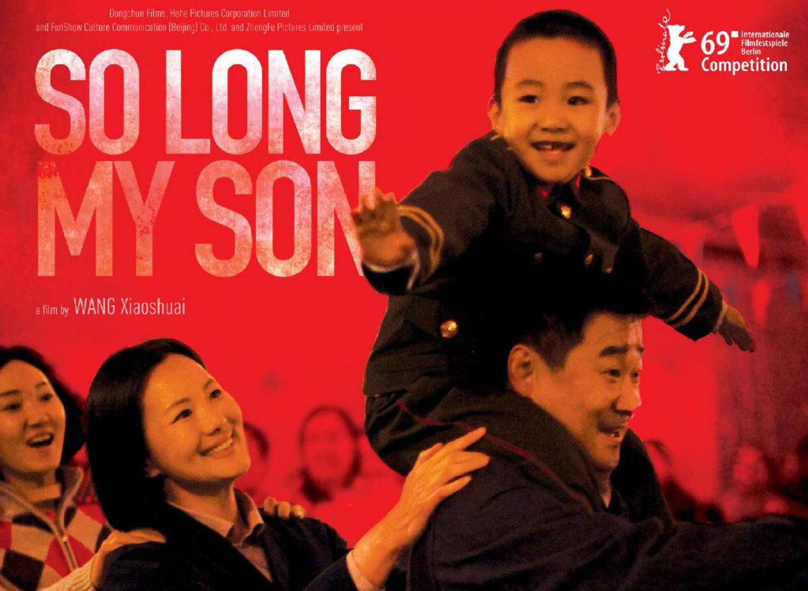
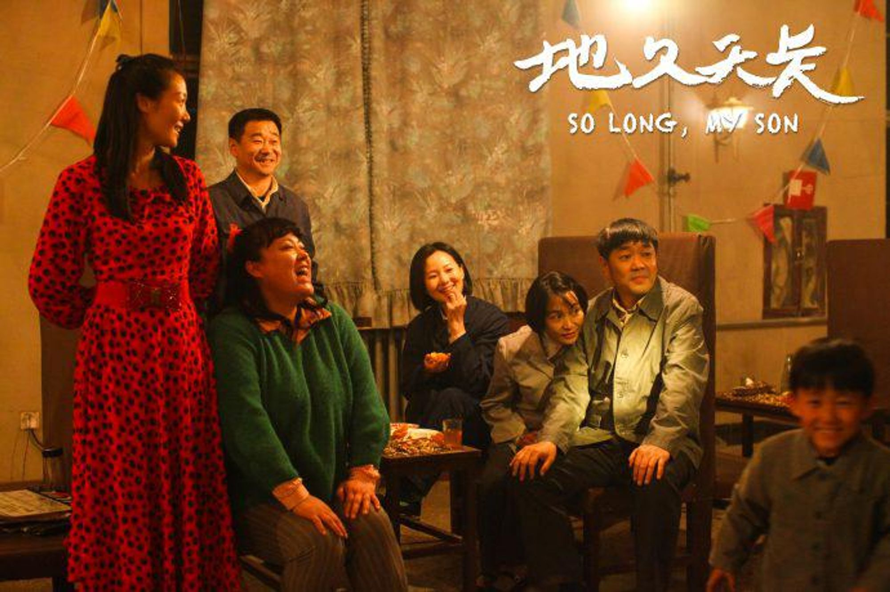
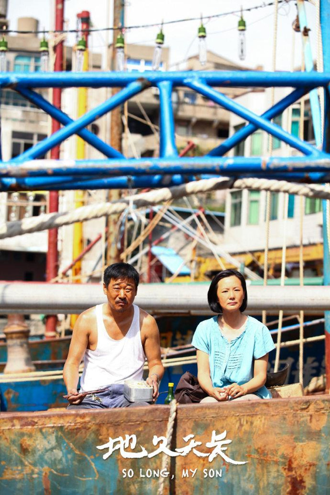
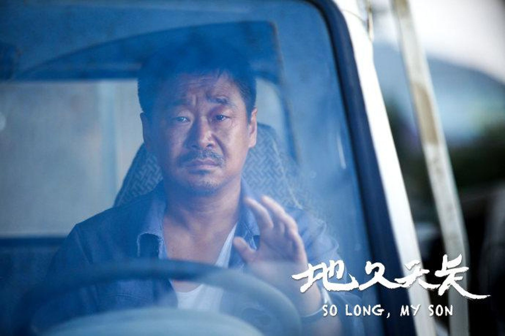
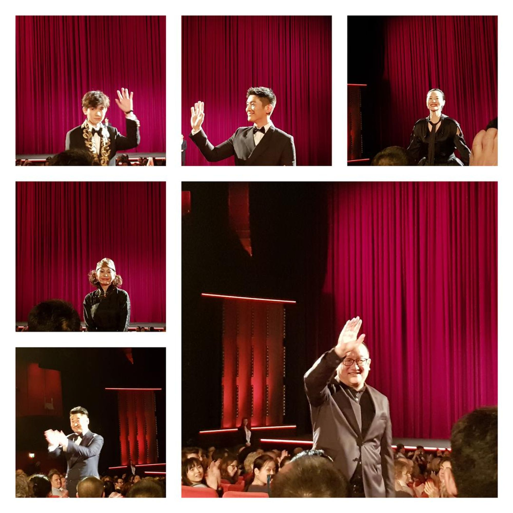

2019-02-02 柏林电影节《地久天长》观后感
目录
《地久天长》主要讲了这样一个故事：
上世纪八十年代，刘耀军家和沈英明家是好友，两人的妻子王丽云和李海燕在同一家工厂上班，两家的孩子在同一天出生甚至一起庆祝生日，两家相处和睦友好。

后来，王丽云意外地怀上了二胎，她和丈夫都很想要这个孩子，但迫于当时计划生育政策的压力，一直没敢和别人说，商量要不去乡下生这个孩子，但又愁巨额罚款。有一天王丽云晕倒了，李海燕也知道了她怀孕这件事。李海燕在厂里的计生委工作，作为计生委副主任的她劝王丽云打掉了二胎。这是当时政策下最明智的做法。
刘耀军虽然恨自己没有能力保住这个孩子，但也没有办法，他发了一通脾气后，也接受了这个事实。日子依然不紧不慢的过着，两家依然是好友。
 两家的孩子刘星和沈浩从小就是彼此的玩伴，刘星是一个胆小内敛的人，同龄的沈浩却生性爱冒险。他经常拉着刘星到处玩。
有一天，两孩子在水库玩耍时，不幸发生了，刘星溺水身亡，刘耀军家从此失去了孩子。
李海燕非常自责，她大声呵责沈浩，问当时的情况，骂沈浩不听话，带刘星去水库边玩。加上当时王丽云的二胎是她劝说打掉的，就更难过了。而王丽云在上一次手术上大出血，已经不可能再怀孕了。
李海燕为这事自责，刘耀军和王丽云却没有责怪他们，他们反而劝李海燕和沈英明不要再在孩子面前提起这事了。渐渐地，以前两家相聚时温馨快乐，失子之后，刘耀军和王丽云没有心情去聚会了，沈英明家也不好叫他们。两家就这样慢慢的生疏。
那个年代，工人铁饭碗不保，下岗和下海是最热门的话题。刘耀军和王丽云在这件事情的打击下，下定决心搬走。
搬来搬去，他们定居在一个海岛上，在那里收养了一个孩子，也取名叫刘星。新刘星非常叛逆，想自己出去闯。在冲突日复一日的加剧下，刘耀军给了新刘星自己的身份证和一些钱。同时，为了治妻子的病，他和妻子又回到了包头市当时的筒子楼。
 沈英明当年决定下海，十几年后作为房地产开发商的他赚了很多钱。他的儿子沈浩也成为了一名医生。
多年以后，李海燕重病住院，她一辈子都对自己劝王丽云打胎的事情耿耿于怀。她临终前终于见到了王丽云，她流着泪，说了最后一句话，“丽云，现在可以生了，咱有钱了，可以交罚款了。”
而在那栋几十年没变的筒子楼里，沈浩向刘耀军夫妇交待了当年的实情：是他把刘星推下水的。刘耀军和李海燕原谅了他。最后，他们去了儿子刘星的坟头，这对中年夫妻在坟头就相望无言地那么坐着，像是对之前的一切有一个交待。
 说说我对这个电影的一些理解吧。
- 电影的时长是三个小时，刚开始觉得节奏非常慢，镜头里大片段的沉默，主人公脸上的愁眉不展，生动的火车和机械加工噪音。他们一家在海边的生活孤独而没有生机，是那种不需要说一个字，你看着画面就能感受到的沉闷。与后面切回二十年前的有音乐有好友有说有笑的生活的对比非常明显。
- 片子这么长是非常有必要的，因为它对之前和之后的生活都进行了非常详细的描写。这种描写不是通过言语，而是通过画面。台词不多，但是观众会懂那种情绪。这种不动声色的描写是最让人记忆深刻的。有一种片子是那种我会在此后的生活不断想起它，例如《一一》，这部电影就是属于那种。这就是它的魅力。
- 电影涉及的话题非常广，基本上融合了八十年代的热门话题——“国企改制”、“下海热潮”、“计划生育”和“失独家庭”。这对我们没经历那段历史的人来说是一个很好的了解途径。4. 电影非常感人，主人公非常善良，不论怎样的变故两人都安之若素，从来没想过去责怪别人。最后李海燕临终前的那句话出来的时候我哭了，片中反复出现的一首歌便是《友谊地久天长》，成年人的友谊大概就是这样呀：各有各的难处，却会为对方找想。
电影节刚开始的时候，我本来打算看的是娄烨导演的《风中有朵雨做的云》以及张艺谋导演的《一秒钟》。后来《风中有朵雨做的云》的时间腾不开，张导演的影片又撤了，我们就去现场买了这部影片的票。得知电影有三个小时，我很忐忑，不知道这是一部什么样的影片。后来证实了它是一个巨大的惊喜。我当时不知道它会得奖，但她感动了现场观众，放映结束后掌声经久不息。
 （图为主创团队进场后和大家打招呼）